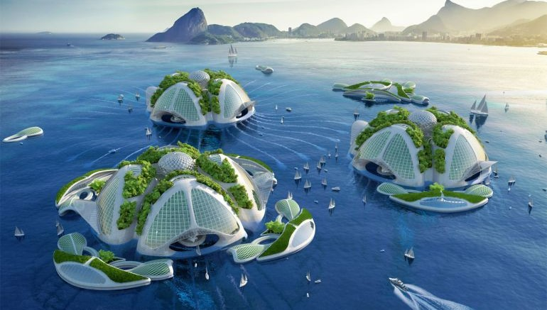

Solar Pedia

CITY CORUSCATE
Situated in the glistering heats of Mars this city might illuminate your soul.
CITY EURODEL
Colder than the earth's arctic, this place is known for the sparse species of colder nerve.
CITY VERDANT
The evergreen grown here is the rarest of all planets, capital of Europa one of the moon of Saturn.
CITY SCRADIED
The marvel of this architecture is only half-seen, the beauty will be touched once you be there.

CITY BUYONTEL
One of the most loved cities to venture submerged houses.